投稿日2022-10-20
ハンドルバー
自転車のハンドルバーには色々と種類がある。ママチャリによくついてるのがノースロードバー
クロスバイクやMTBで見かけるのがフラットバーで自分のSPEED P8にもついている。
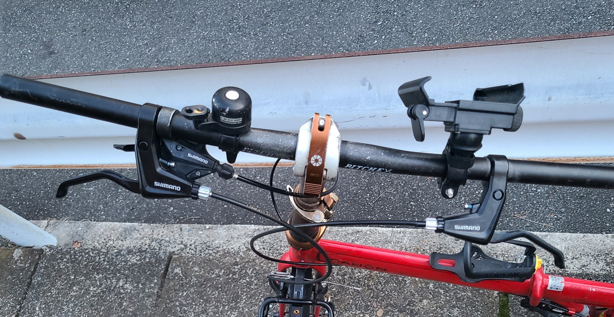
ロードバイク系はやっぱり言わずとしれたドロップハンドル。
そしてドロップハンドルの代わりに使われがちなのがブルホーンハンドルバー。ドロハンの下側いらねくね？って思った人はこれをよく使う（ただし一部レースはドロハン必須だったりするのでむやみに替えられるものでもないとかどうとか）
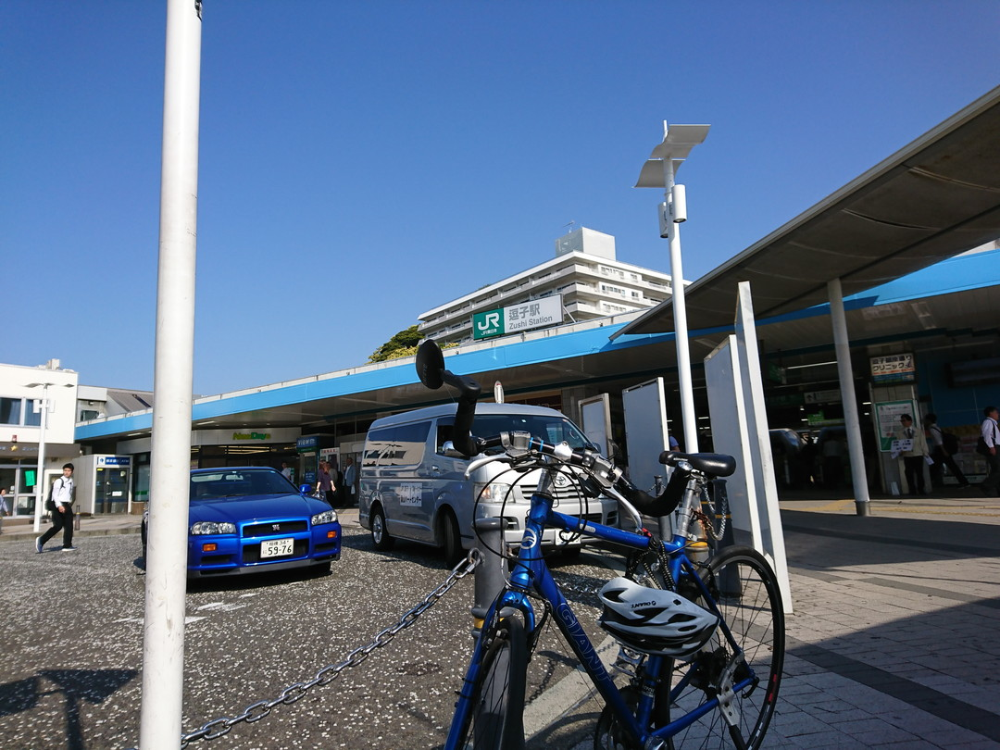
今はなきEscape R3にもこれをつけていた時期があった。ちなみにつけた理由は近所の狭い橋を通りたかったからだ。（その後改築工事で別の橋が完成したためひつようなくなってしまった。）
それ以外にも早く漕ぎたい少年達のために編み出されたとされる【要出典】セミドロップバー。クラシックバイクのように幅広なプロムナードバーとかトレッキングバーとか、いろんなポジションとれるバタフライとか…あげればキリがない。
幅広っていいな
幅が広いっていいよなぁ。と先日愛車であったボルティーのハンドルを握りながら思った。
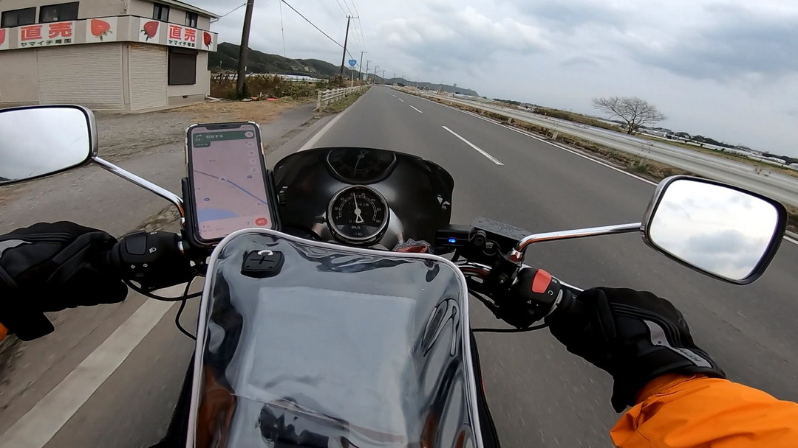
やっぱりフラットバーはベント角、つまりちょっと角度がついてるとは言え、浅い。もっと深く折れているハンドルがほしいと探してた。
あさひで良さそうな商品を見つけたが、流石にこういうのは実店舗で見て、触れられるようならそうしたい。と思い最寄りのあさひに向かった。
なかった…けど
近所の店舗にはドロップハンドルが1個置いてあるだけだった。店員さんにお願いして近隣店舗の在庫状況も調べてもらったがなし。残念……、と思いきや対応してくれた店員さんが個人的に行ったことのある自転車屋を教えてくれた。ありがたい。そこで聞いた店のウチ近い方に後日行った。個人店だから入りにくかったが勇気を出して入店したら、まあすごい数置いてあるわ、フレーム手組みしてるわですごい場所だった。店主さんも穏やかで博識な人で色々と教えてくれた。結局3割も理解できなかったけど。しかもハンドルを取り出してDahonに借り付けまでさせてくれたのでもうその場でしっくり来たものを買ってしまった。またニッチなことを聞く時はあの店に行こうと思った。
それはプロムナードバーですか？
結局何を買ったかというとこれである。
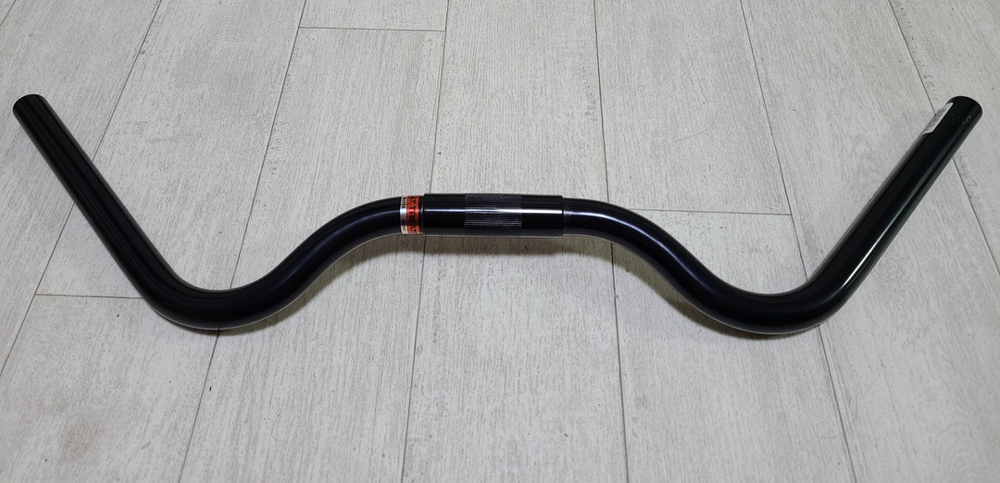
＼(^o^)／みたいな形のプロムナードバー。正直トレッキングバーとの区別がわからないけどこれはプロムナードバーらしい。
これ。握った感じがボルティーそっくりだったので買ってしまった。
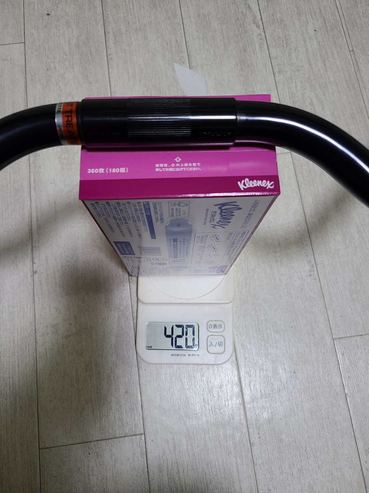
重量は420g、元々のハンドルバーが236gなのでまたまたフロントヘビーになってしまう。さて取り付けるか…
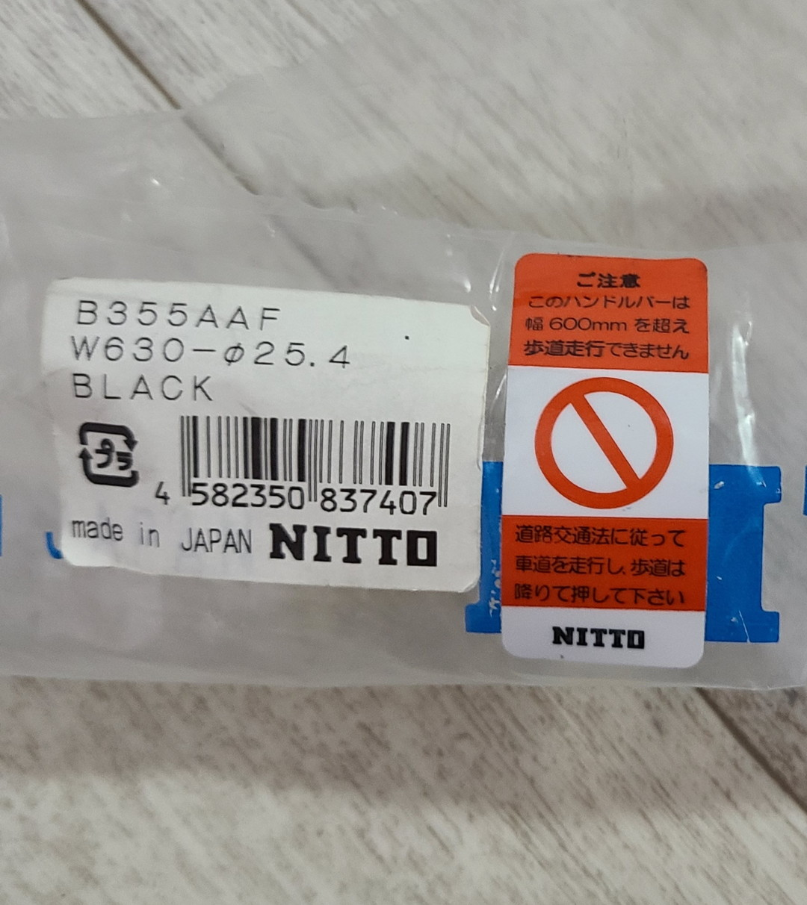
むむ、…どういうことだ……と思って調べたら
どうやら自転車の幅は法律で60cmまでと決まっているらしい。それ以上の長さの場合、緊急回避のために歩道に乗り上げたり、歩道の中にある自転車専用レーンを走ることができないようだ。うーんこれは困った。流石に首都圏の車道は路駐も多いし、交通量もあるしで常に車道だけを走るというのは中々危険だ。まあ実際自転車の法律運用なんてガバガバだから気にするほどでもないのかもしれないけれど、知ってしまった以上カットはしたほうがいいのかもしれないなぁ。
とりつけ
とりあえず取り付けしてしばらく乗ってみないとどこらへんまで切るかなんてこともわからないのでつけてみた。
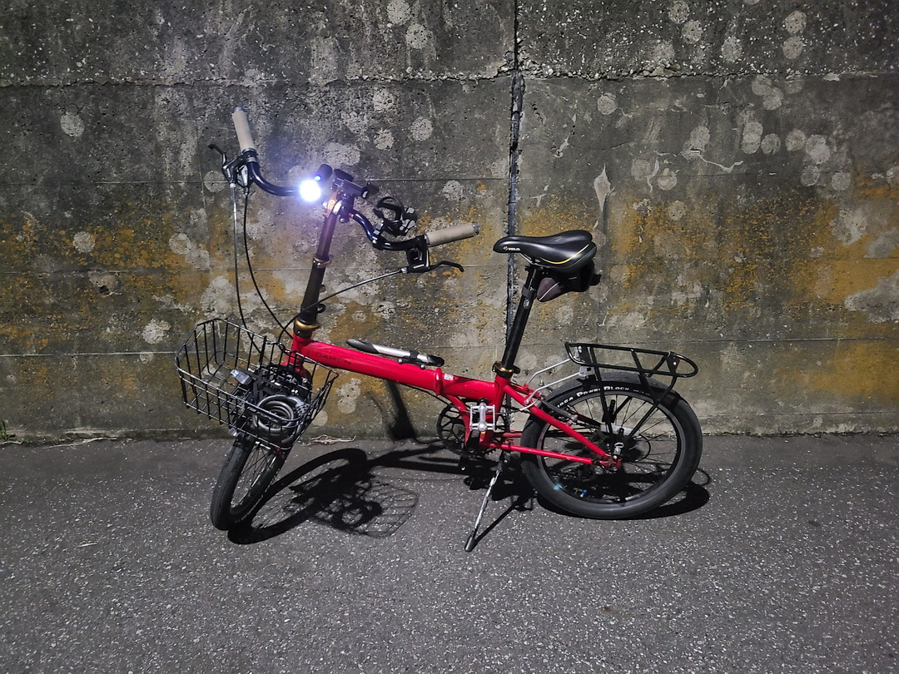
か、カマキリだ。すごい頭でっかちな見た目になってしまったが、乗り心地はボルティーを彷彿とさせる快適さだった。ああ、幅が広いってなんて快適なんだろう。
フラットバーに比べてカーブを曲がる時がマイルドになった。フラットバーはクイックに腕の動きが伝わるがママチャリに多少近くなった感じだ。その分安心感が出て良きかな。
でもカットする
そこから数日悩んだが結局カットすることにした。そもそもハンドルバーがでかすぎると日常使いや輪行に支障が出るし、ミニベロの見た目にあまりにも乖離しすぎている。ということで大体600mmより余裕を保たせて590mmくらいにカットした。
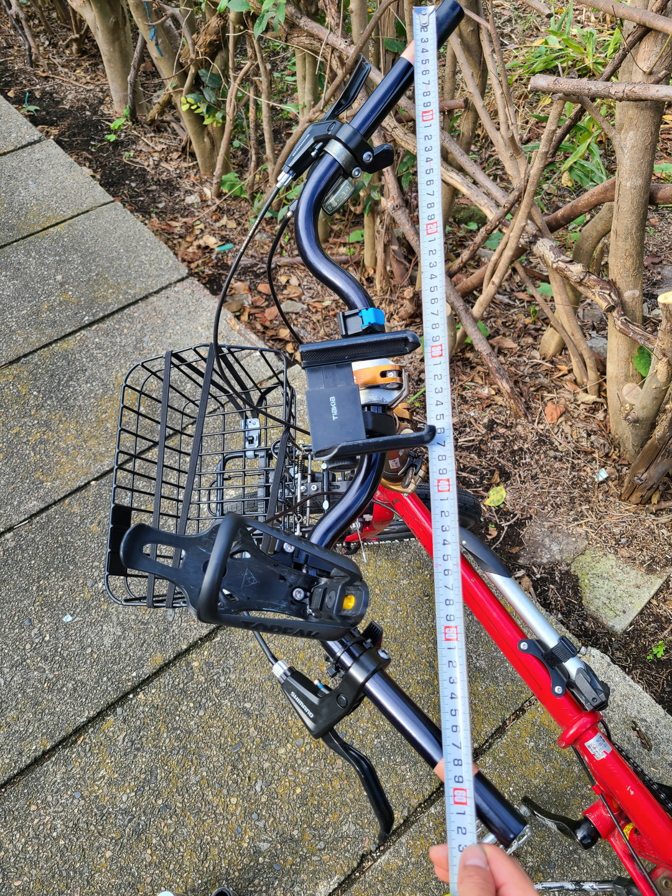
大体の位置を決めたら養生テープで目安を作って
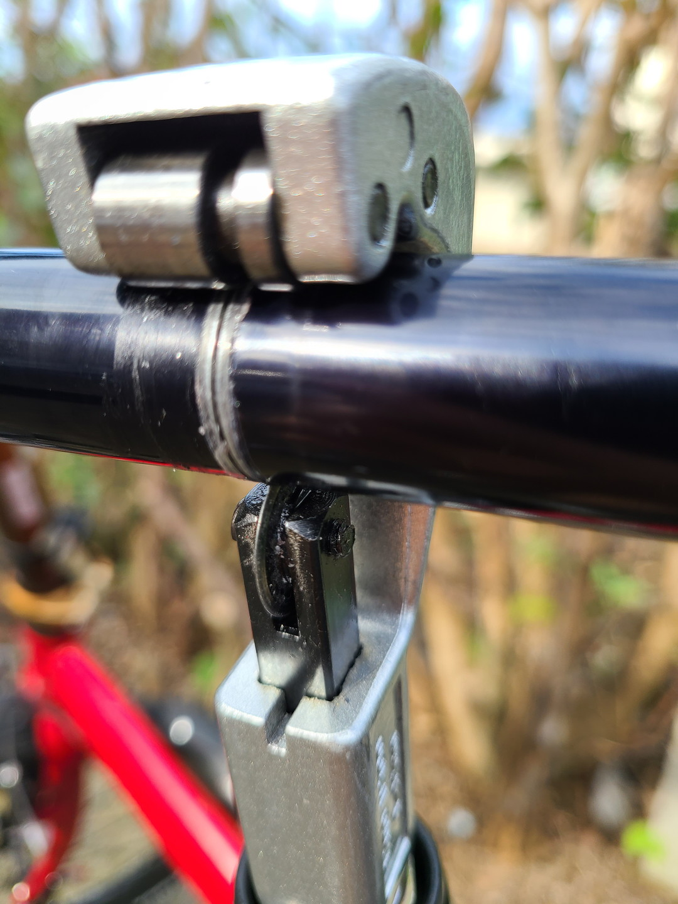
パイプカッターを少しずつ締めながら切っていく。
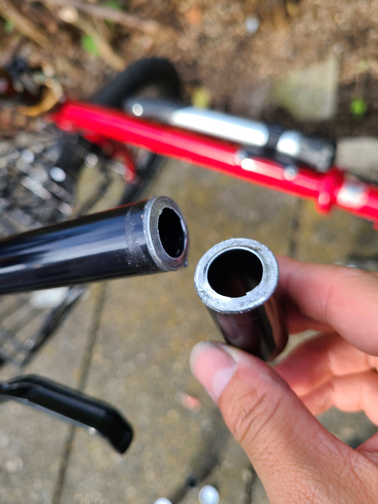
地味に時間がかかったがちゃんと切れてよかった。
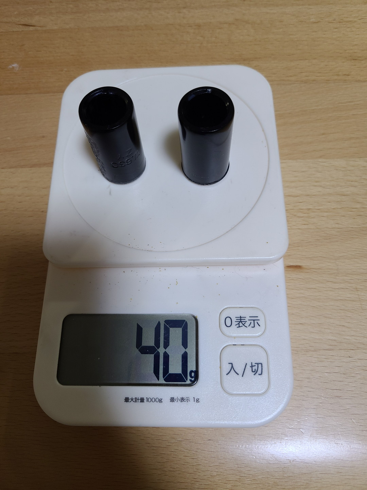
切った破片部分、合わせて40g。ここに来て久々の軽量化。
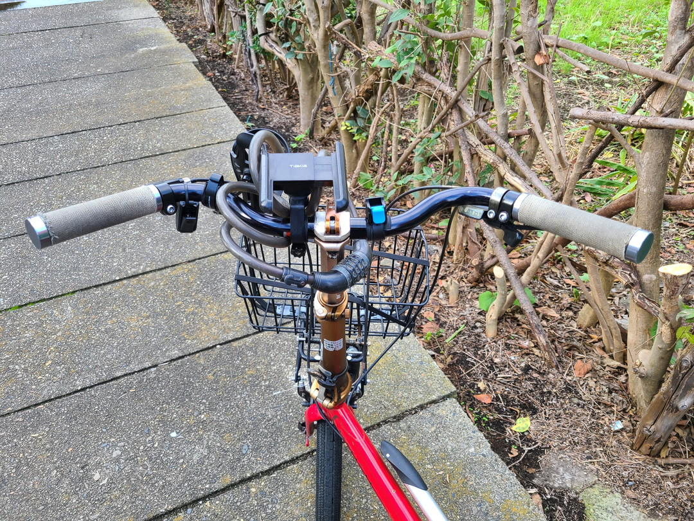
だいぶ見てくれも大人しくなった。乗り心地はやっぱり多少変わったがサドルを前に動かせばそこまで影響はないかな。
その他
記事にするほどじゃないことをここに書いて終わりにする。
ディレーラーAltus RD-M310のアジャスターボルトを六角で回せるようにした。
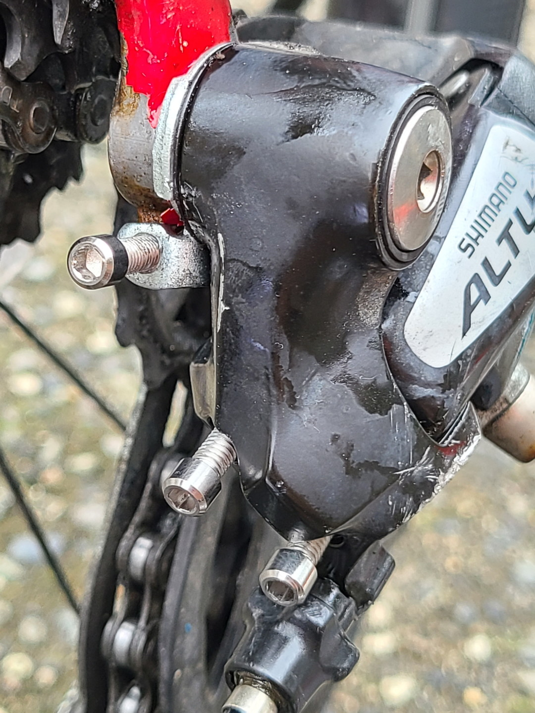
このAltus去年の在庫不足のときに中古を定価同然の価格で買ったものなので今度弄り倒してやろうと思ってる。あとしれっとボトルケージをハンドルバーにつけたとか色々マイチェンあるけど書いてたらキリがないのでここらで終わりに。ではまた～。